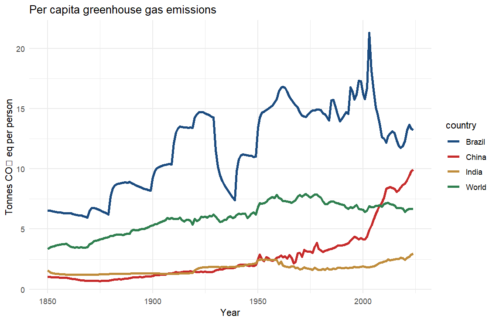
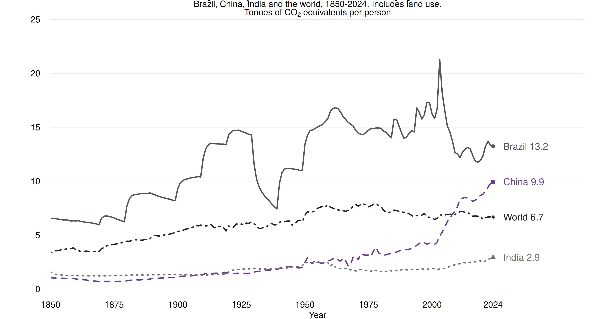

Module 6 Chart Accessibility
This exercise improves the accessibility and readability of my Module 5 emissions chart.
Before revision

Accessibility issues
All lines are solid, and the legend requires colour matching. The CO₂ unit also has a missing character.
Checklist plan
Based on the Data Visualization Checklist, I will improve the title and text sizes, correct the CO₂ label, replace red and green with purple and gray, and add distinct line patterns, endpoint markers and direct labels.
| Criterion | Before | Change |
|---|---|---|
| Text hierarchy | CO₂ glyph is missing. | Fix CO₂ and use clear text sizes. |
| Grayscale | All lines are solid. | Add line patterns, markers and labels. |
After revision

Data from Jones et al. (2025) and Our World in Data (2025).
China’s emissions rise sharply after 2000. In 2024, Brazil is at 13.2, China 9.9, World 6.7 and India 2.9 tonnes of CO₂ equivalents per person.
Exercise summary
I checked my Module 5 chart for accessibility issues, used the Data Visualization Checklist and recorded planned improvements in Word. In R, I corrected CO₂, improved the title and text sizes, changed the colours, and added line patterns, endpoint markers and direct labels. I saved the revised chart.
AI acknowledgement
I used ChatGPT (OpenAI, 2026) to search for information and websites related to data visualisation. I also used ChatGPT (OpenAI, 2026) to identify vulnerabilities in my R code and revise it accordingly.
References
Evergreen, S. (n.d.). Rate my visualization. Data Visualization Checklist. Retrieved October 1, 2026, from https://www.datavisualizationchecklist.com/
Jones, M. W., Peters, G. P., Gasser, T., Andrew, R. M., Schwingshackl, C., Gütschow, J., Houghton, R. A., Friedlingstein, P., Pongratz, J., & Le Quéré, C. (2025). National contributions to climate change due to historical emissions of carbon dioxide, methane and nitrous oxide (Version 2025.1) [Data set]. Zenodo. https://doi.org/10.5281/zenodo.16640595
Our World in Data. (n.d.). Per capita greenhouse gas emissions [Interactive data visualization]. Retrieved October 1, 2026, from https://ourworldindata.org/grapher/per-capita-ghg-emissions
Our World in Data. (2025). Per capita greenhouse gas emissions including land use [Data set]. Retrieved October 1, 2026, from https://ourworldindata.org/grapher/per-capita-ghg-emissions
OpenAI (2026) ChatGPT [Large language model], accessed 1 October 2026. https://chatgpt.com/share/6abed80e-7edc-83ec-b871-98e5e4b42dde